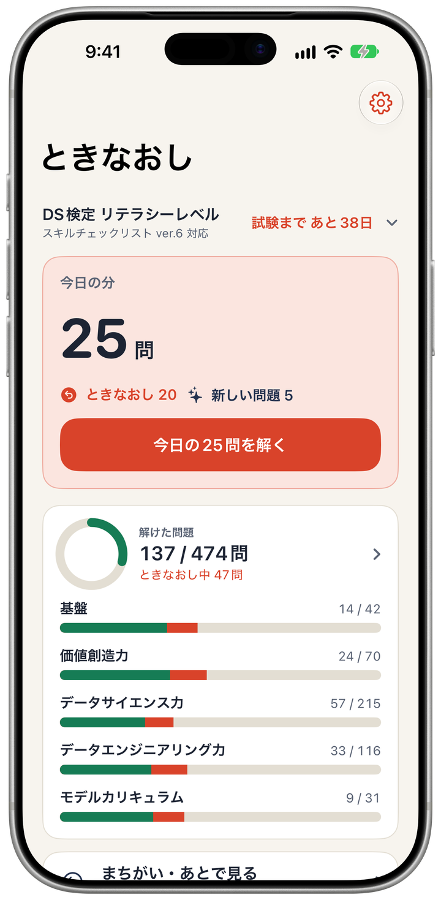

iPhone 向け・DS検定 リテラシーレベル
間違えた問題が、
解けるまで戻ってくる。
「ときなおし」は、データサイエンティスト検定 リテラシーレベル（DS検定）の4択問題集です。間違えた問題は、その回の最後・翌日・3日後に戻ってきます。2回続けて解けたら卒業。出題範囲はスキルチェックリスト ver.6 の★項目を全部通ります。
App Store で見る（準備中）iPhone 専用の有料アプリです。一度買えば、あとからお金はかかりません。広告もありません。

こんな困りごとのために作りました
答えや解説が間違っている
問題は、作った人とは別の目で全問を解き直し、答えが合わないものは直すか外しました。それでも誤りを見つけたら、解説の下の「誤りを知らせる」からすぐ送れます。
問題が少なくて、範囲が足りない
協会のスキルチェックリスト ver.6 の★項目（基盤・価値創造力・データサイエンス力・データエンジニアリング力）と、モデルカリキュラムの題目を1つずつ問題にしています。どこまで解けたかは「出題範囲」の画面で見られます。
間違えた問題だけ復習できない
間違えた問題は自動で「ときなおし」に入り、解けるまで戻ってきます。自分で印をつけて集め直す必要はありません。
開けない・記録が消える
ネットにつながっていなくても、電車の中でも機内モードでも解けます。記録は iPhone と、あなたの iCloud に残るので、機種変更のあとも続きから解けます。
ときなおしの流れ
解く
4つから選ぶと、その場で正解と解説が出ます。つぎへのボタンは、いつも画面の下の同じ場所です。
間違えた問題が、その回の最後に戻ってくる
解説を読んだ直後に、もう一度だけ解き直します。
翌日と3日後にも戻ってくる
「今日の分」に、戻ってきた問題と新しい問題が一緒に並びます。2回続けて解けたら卒業です。
仕上げは模擬試験
本番と同じ100問・100分で通して解けます。25問・25分の短い版もあります。結果は領域ごとの正答率で残ります。
できること
| 問題 | 4択・全問に解説つき。ことばとしくみ、場面での判断、計算の3種類 |
|---|---|
| 出題範囲 | スキルチェックリスト ver.6（★）と、数理・データサイエンス・AI（リテラシーレベル）モデルカリキュラム |
| 今日の分 | 1日に解く問題数（10・20・30・50問）を決めると、戻ってきた問題と新しい問題を組んで出します |
| 模擬試験 | 100問・100分と、25問・25分。前の問題に戻って答えを変えられます |
| さがす | ことばで問題と解説を検索。あとで見たい問題には旗をつけられます |
| 試験日 | 入れると、あと何日かが出ます。7日前から仕上げの画面になります |
| やさしく言いかえる | 対応している iPhone では、解説を Apple Intelligence でやさしく言いかえられます（iPhone の中で動きます） |
| 毎日のお知らせ | 間違えた問題が戻ってきた日に、その数を通知します（オンにしたときだけ） |
| 広告・課金・登録 | 広告なし・アプリ内課金なし・アカウント登録なし。開発者はデータを集めません |
よくある質問
公式のアプリですか
いいえ。検定の主催者とは関係のない、個人が作った問題集です。問題はすべて、このアプリのために新しく作りました。過去問や市販の問題集の写しではありません。
問題に誤りを見つけました
解説の下の「この問題の誤りを知らせる」を押すと、問題の番号が入ったメールを送れます。確かめて、次の版で直します。
機種変更したら記録はどうなりますか
記録の控えを、あなたの iCloud に置いています。新しい iPhone で同じ Apple アカウントにサインインしていれば、アプリを開いたときに続きから解けます。
ほかの資格は増えますか
増やすときは、このアプリの中に足します。
返金はできますか
返金は Apple の規定に従います。reportaproblem.apple.com からお申し出ください。開発者が直接返金することはできません。
お問い合わせ
不具合や気になることがあれば、ryo.tsuzukihashi@tsuzukit.com までご連絡ください。作っているのは個人開発者の續橋涼（TsuzuKit）です。